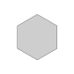

MICROSITIO
Paleta Cromática
COLORES
La paleta cromática elegida fue en la gama de colores y tonos de difrentes tipos de azules, desde petroleos hasta un blanco con tintes de gris.
También se utilizo para algunos fondos del sitio web distintos colores en la gama de los grises y blancos en los distintos usos que se les dieron a los contenedores en cada uno de los casos a lo largo del proyecto.
#02080F R:2 G: 8 B: 15
#122C45 R: 18 G: 44 B: 69
#234A7B R: 35 G: 74 B: 132
#618198 R: 97 G: 129 B: 152
#CECECE R: 206 G: 206 B: 206
#161616 R: 22 G: 22 B: 22
#353535 R: 53 G: 53 B: 53